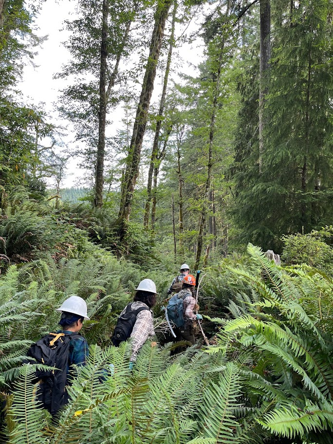
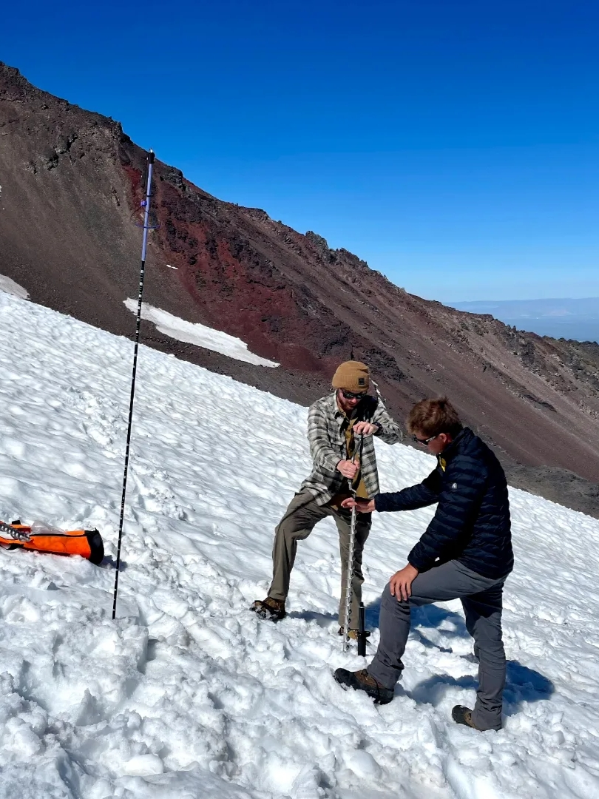
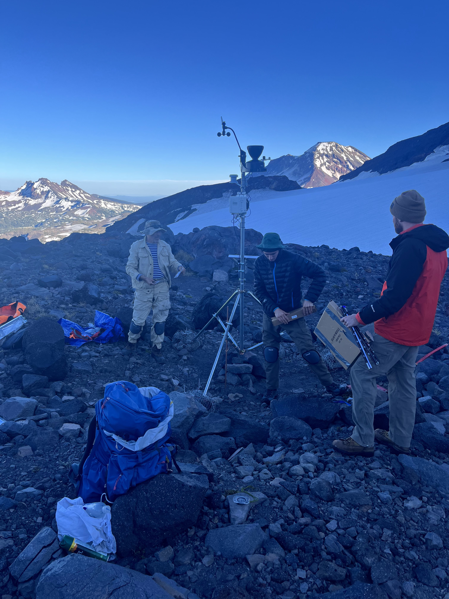

Field
Reconstructing fire history of the Elliott State Forest
In the summer of 2022, I had the opportunity to work for three months as a field technician with a team hired by Oregon State University’s College of Forestry. Our primary task was to collect tree cores and fire scars within the Elliott State Forest. The goal of our work was to reconstruct the fire history of the region in order to better understand how fire has influenced forest succession over time.





Establishing a glacial weather station
In July 2023, I had the opportunity to join a team of cryosphere scientists to assist with improving glacial modeling for Haden Glacier, located between Middle and North Sister in Oregon. During the fieldwork, we set up an automated weather station and drilled three ablation stakes into the glacier. This research aims to enhance our understanding of the glacier’s behavior and contribute valuable data on its role in the local water cycle. The findings will help inform city planners and land managers about the glacier’s contribution to water resources for surrounding communities.




Surveying coastal redwood locations
In October 2024, I joined fellow FRANCIS lab member Subham Banerjee to survey canopy composition across the northern range of the Coastal Redwoods. We traveled from Brookings, Oregon, to Santa Rosa, California, sampling over 400 plots across 11 State and National Parks. The data we collected will be used to train and validate a satellite model to predict the spatial distribution of redwood trees in California and Oregon, supporting ongoing conservation efforts.